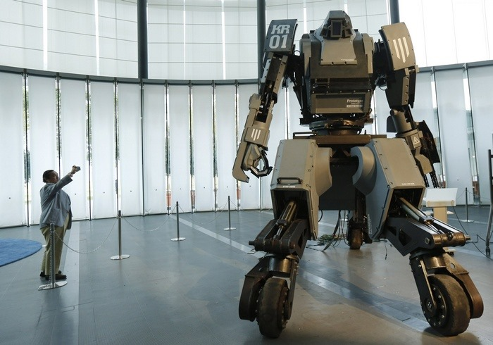
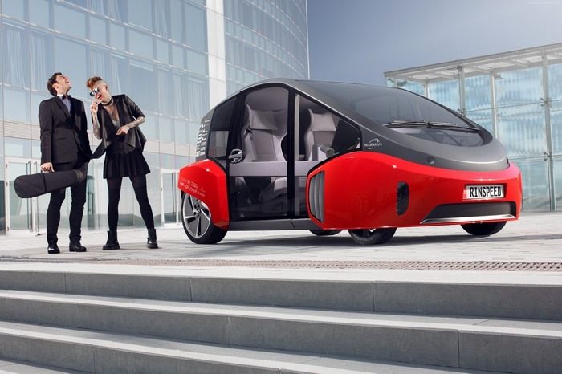
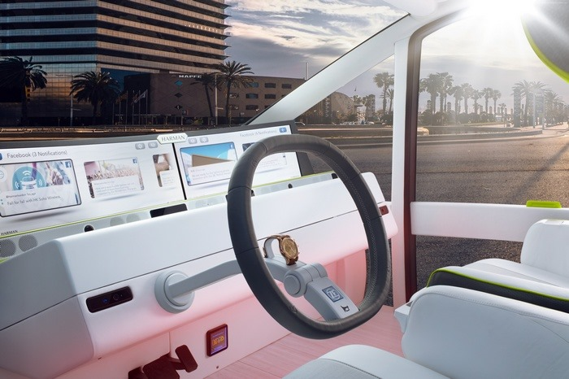
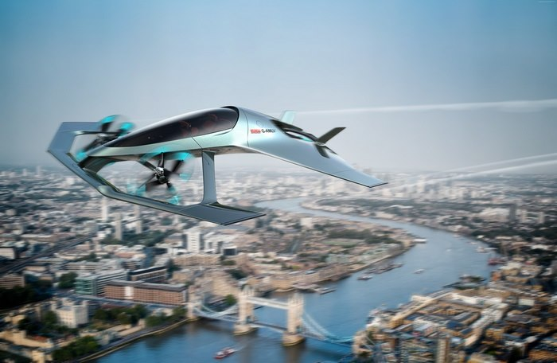
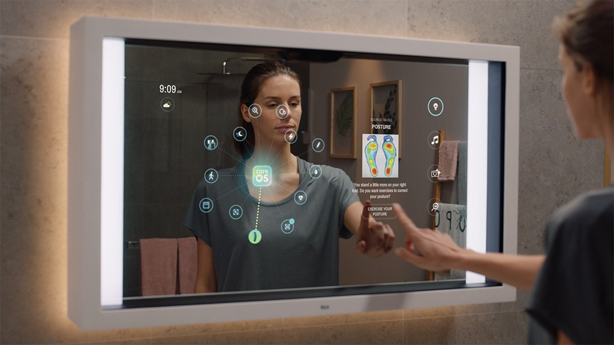

We are a group of six students who are trying to make a small difference in the world.
Right now, we are studying Computer Engineering at the University of Prishtina, Kosovo.
We were asked to create a website as a project in our course called “The Internet” with
programming languages such as HTML, CSS, and JavaScript. Based on our experience from elementary
and high school, we were not exposed to the programming world for different reasons.
One of them was the education system in our country. They did not include programming as part of the
technology subject in school. But our love for technology made us study it. In the beginning,
has been very hard for us, and During the last years we have witnessed the power that technology
has to do many things, and changing the world is one of them.
We are privileged to be living in a time where science and technology can assist us to
make our lives easier and rethink the ways we go about our daily lives.
The technology we are already exposed and accustomed to has paved the way for us
to innovate further and this list of current and future technology certainly has the potential
to change our lives even more like:
Space tourism is human space travel for recreational purposes.
There are several different types of space tourism, including orbital,
suborbital and lunar space tourism.
- •Robots in space and in the workplace

Robots are currently working in almost every field like medical,
non-medical, mechanical, documentation and many other.
- •Electric/self-driving cars
Self-driving cars are not yet available for consumer purchase.


- •Flying cars

Many prototypes have been built since the early 20th century, using
a variety of flight technologies, such as distributed propulsion;
some have true VTOL performance. The PAL-V Liberty roadable aircraft
targeted 2021 to become the first flying car in full production.
- •Hyper-fast trains
A Hyperloop is a proposed type of train that would travel at very high speeds.
The reason it can travel so fast is because it is inside a tube with no air.
This vacuum means that there will be no friction to slow the train.
- •Wearable screens
When you’re thinking who could want a wearable tech device, the answer is
absolutely going to be everyone. You can use these devices to make sure you
and your loved ones stay safe and healthy with a wide variety of devices.
You can find gadgets to track virtually any of your vitals, from an EEG
neuro-transmitter to a heart rate monitor or an SPO2 monitor.
- •Gesture-based computing
Gesture based computing uses hand, eye, face and body movements
often in combination with voice to control different applications.
It offers a more natural form of human computer interaction (HCI).
Input devices range from gloves or cameras to touch screens and controllers
such as the Wiimote
- •Smart mirrors that check your health

Collects visible health data,estimate weight/BMI,collect temperature and
identify visible symptoms of underlying conditions.
- •Artificial Intelligence
Artificial intelligence (AI), is intelligence demonstrated by machines,
unlike the natural intelligence displayed by humans and animals.
All these are built directly or indirectly with programming languages.
There are many programming languages right now and many are being created day by day.
Programming is becoming important in our life to enhance and increase the power
of computers and the internet, for speeding up the input and the output processes in a machine,
to automate collect, calculate, manage, analyze the processing of data and information accurately.
Like Steve Jobs said:
“Everybody in this world should learn how to program a computer….. because it teaches you how to think.”
For anyone who like to communicate with computers and make them do great things, you have come to the right place for you.
Sand-box entertainment